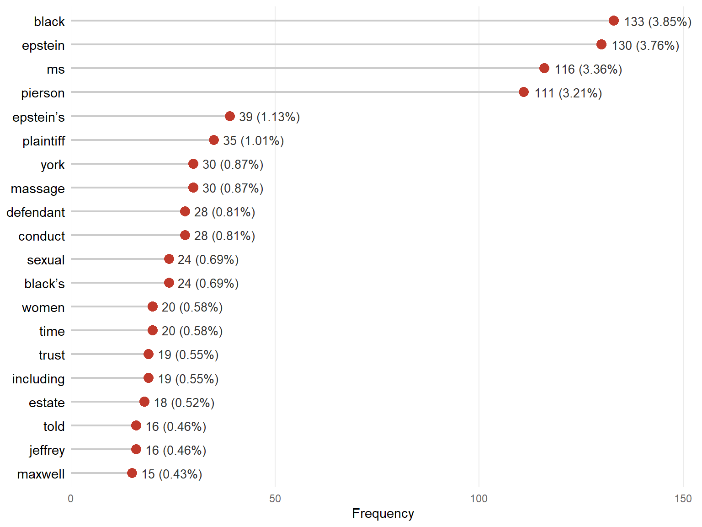
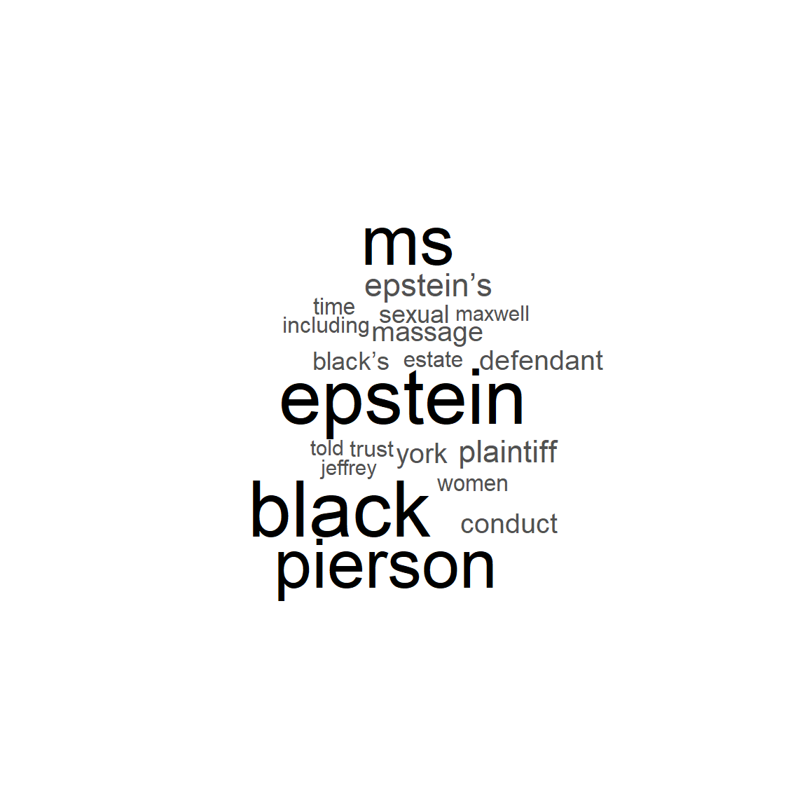
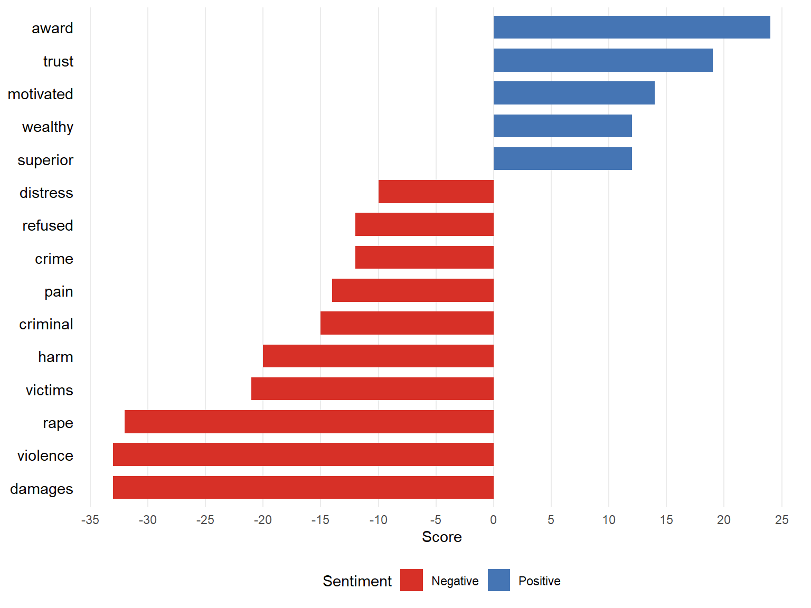
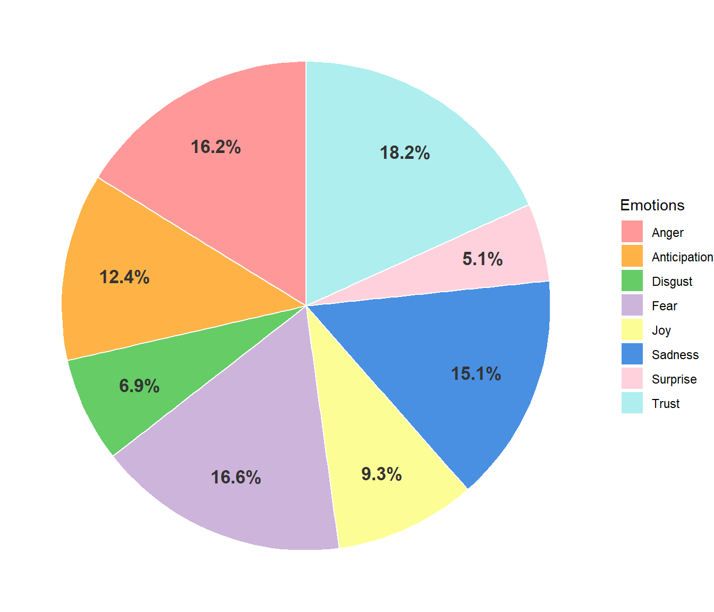
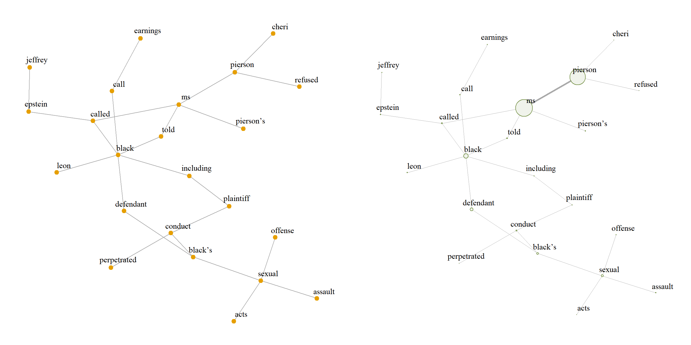
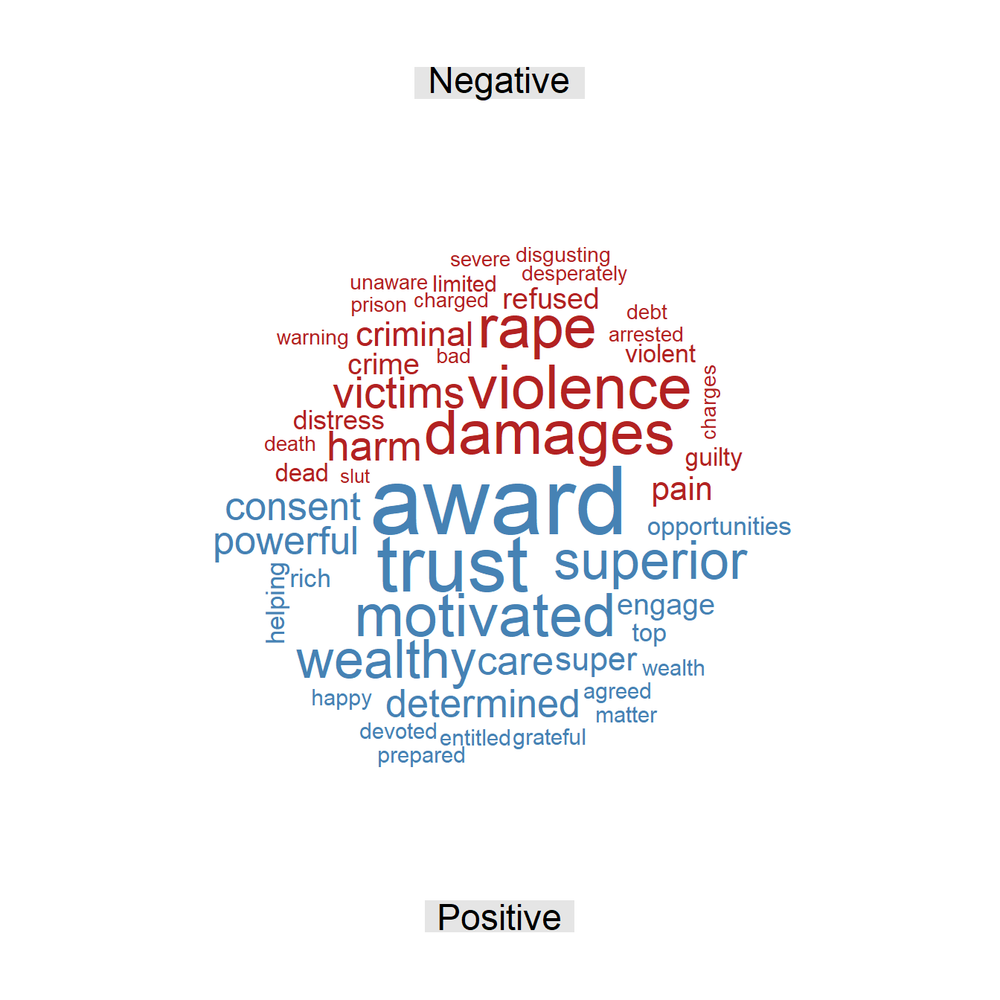
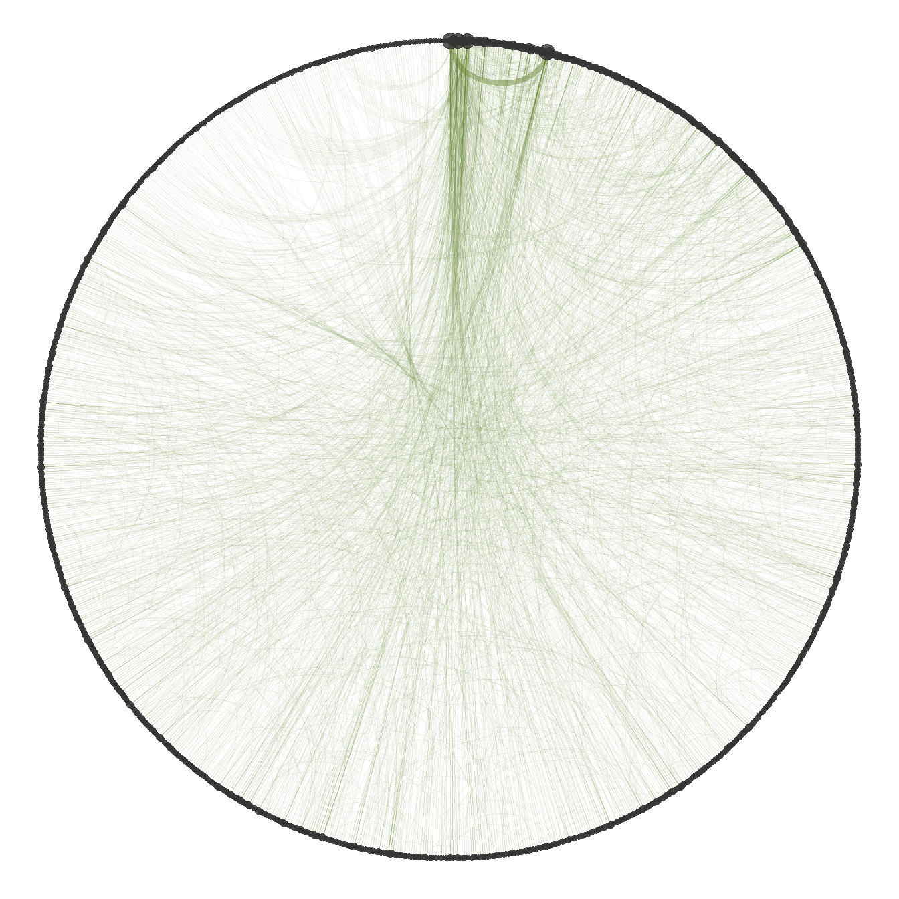
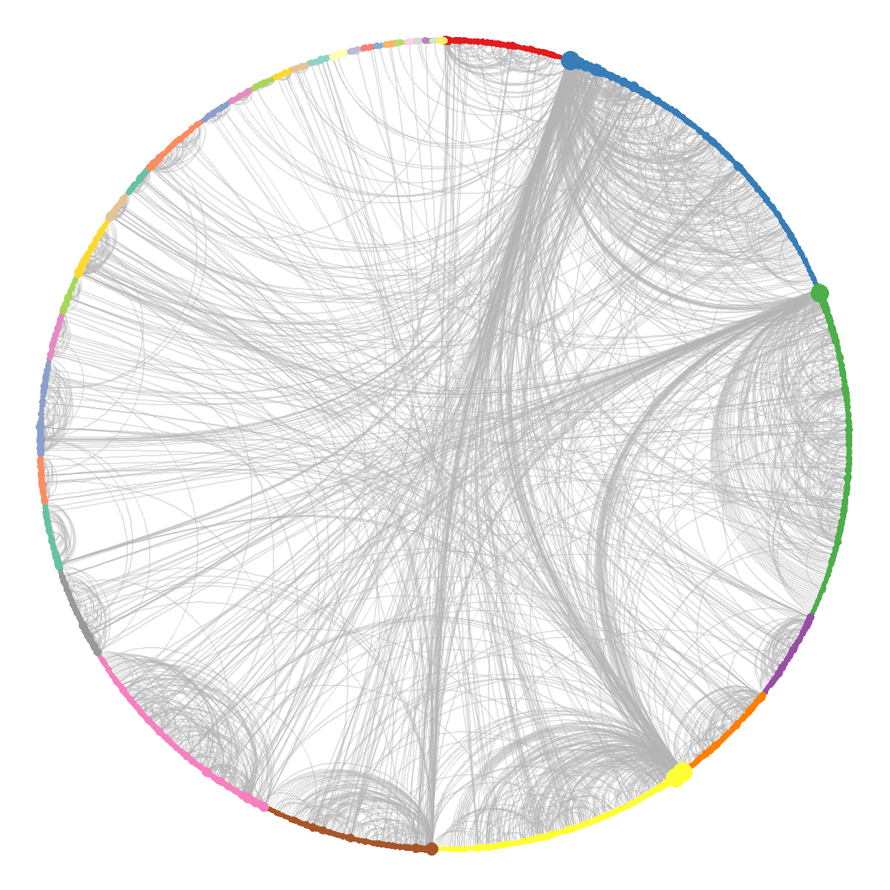

Pierson v. Black
Civil complaint filed on November 28, 2022
| Document type | Civil complaint (New York Adult Survivors Act) |
| Court | Supreme Court of the State of New York |
| Index number | 952002/2022 |
| Source | NYSCEF |
| Words (cleaned text) | 7,856 |
This legal document is a civil complaint filed by Cheri Pierson against the businessman Leon Black and against the estate of Jeffrey E. Epstein and its executors in the Supreme Court of the State of New York, under New York’s Adult Survivors Act (ASA). The plaintiff alleges that in 2002 she was violently sexually assaulted and raped by Black inside Epstein’s Manhattan residence, in an encounter that, according to the complaint, was deliberately planned and facilitated by Epstein himself, taking advantage of the plaintiff’s financial vulnerability. The complaint argues that Epstein and his network recruited women with false promises of financial support for their professional projects or with offers of paid massages, and then introduced them to powerful men. The document states that, after suffering serious physical and psychological harm, the plaintiff was implicitly pressured into silence through threats of hidden recordings and later payments in cash. On the basis of these facts, which the complaint characterizes as sexual offenses under New York criminal law, the plaintiff brings claims for sexual assault, battery, intentional infliction of emotional distress, and gender-motivated violence, and seeks a declaratory judgment, injunctive relief, and punitive damages. The defendant denies the allegations.
Word frequency
Figure 1 shows the most frequent words in the text. The relative frequency shows that none of them stands out from the rest. The first terms by frequency are those referring directly to the actors of the complaint: Pierson as plaintiff, Black as defendant, and Epstein and his estate, to whom the complaint attributes the role of accomplice and co-perpetrator of the alleged offenses. A group of words such as “massage”, “sexual”, “women”, and “trust” also stands out, referring directly to the alleged offenses and to the modus operandi of the trafficking network allegedly led by Epstein. Finally, the term “Maxwell” appears; although it has a low frequency compared with the other people mentioned, it appears in the text on several occasions, which suggests that she is also relevant in the narrative.
Figure 2 shows graphically the distribution of word frequencies in the text. It shows visually the importance of Black, Pierson, and Epstein, whose terms are much larger than the rest, indicating that most of the central themes of the complaint revolve around these three people. Terms such as “Epstein’s” and “Black’s” also stand out, which may refer to the socioeconomic power attributed to them and to how, according to the complaint, it facilitated the abuse. Finally, there are no words that differ from those in the bar chart, which indicates a marked difference between the most frequent and the less used words, the former being the ones that, in general terms, articulate the narrative of the complaint.

The frequency analysis identifies the three main actors of the complaint and shows that they have much greater weight than any other term in the text. It also shows that one of the central themes of the complaint covers the alleged offenses and abuse, the modus operandi of the alleged trafficking network, and how the socioeconomic status of those involved allegedly favored the unlawful activity. Finally, the text is centered on a few terms that appear much more frequently than the rest of the words.
Sentiment analysis
Figure 3 shows that the terms with negative sentiment have higher scores than those with positive sentiment. The three terms with the highest negative charge are “damages”, “violence”, and “rape”, which refer directly to the plaintiff’s account; they are used to narrate what allegedly happened, giving it a much greater impact through strong words that end up characterizing the negative tone of the text. Terms such as “victims”, “harm”, “criminal”, “refused”, and “distress” also stand out; these terms not only describe personal experiences, but also how, according to the complaint, the trafficking network was composed and sustained by the victims themselves, who were coerced through payments or threats.

On the other hand, the term with the highest positive score is “award”, which is mainly used to request damages for the plaintiff, whether economic or to cover the costs of the legal team; this suggests that one of the main aims is to obtain redress for Pierson for the harm caused to her. Terms such as “trust”, “motivated”, “wealthy”, and “superior” also appear, which in this particular context do not have a positive connotation, since they are used to describe how the alleged sexual exploitation network operated and how the socioeconomic status of those involved gave them, according to the complaint, a degree of impunity.

Figure 4 shows that two of the most present emotions in the text are trust and anticipation, which in this case go hand in hand, since they are evoked by the mention of institutions and legal entities in the pursuit of redress for the harm caused, one of the main aims of the text. Emotions such as anger, fear, and sadness are also very prominent, because of the seriousness of the events described, which involve alleged acts such as rape, threats, and payments for silence, among others.
The sentiment analysis shows that the text has an overall negative charge in its narrative, mainly because of the seriousness of the events described and the terms used, reinforced by emotions such as anger, fear, and sadness. By contrast, positive sentiment is reduced to a single term, since many of the words that make it up are not used in a positive sense in this context; this positive element refers to the pursuit of redress for the harm allegedly caused to Pierson, which is accompanied by emotions such as trust and anticipation.
Word relationships
The bigram network was built from the bigrams with a frequency of at least 3, in order to obtain an informative network rather than a noisy one, thus keeping the most relevant information in the text. The analysis uses the largest connected component of the graph, since it concentrates the most relevant information.

Figure 5 shows that the two vertices with the highest strength in the network are those referring to the plaintiff, a main actor around whom several of the themes of the text revolve. Black is connected to Epstein through the vertex “called”, which, according to the complaint, was the means by which the details of the encounter were arranged. Black is also associated with conduct directly related to the alleged abuse, such as “sexual abuse”, “sexual offense”, and “sexual acts”, since he is the main person against whom the rape allegations are made. Finally, the graph shows no explicit direct relationship between Epstein and Pierson, which suggests that the complaint attributes to Epstein the role of facilitator and organizer rather than of direct perpetrator of the abuse.
The bigram network shows how the three main actors identified above relate to each other, clarifying the alleged offenses and who allegedly committed them directly. Pierson plays a vital role in the network, since the vertices related to her are those with the highest strength, which indicates that the general narrative revolves around her. Finally, there are no terms related to the redress sought for the plaintiff, even though this aspect had previously been identified as one of the relevant themes of the case.
The skipgram network is built with all pairs, regardless of their frequency, which makes it possible to find semantic relationships that are not perceptible at first sight. The largest connected component is also used, since it contains the most important information and allows the computation of statistics that are not defined on a disconnected graph, such as the mean distance between vertices.
| Word 1 | Word 2 | Freq. | Rel. freq. |
|---|---|---|---|
| Ms | Pierson | 108 | 3.68% |
| Defendant | Black | 17 | 0.58% |
| Jeffrey | Epstein | 14 | 0.48% |
| Black | Ms | 10 | 0.34% |
| Leon | Black | 10 | 0.34% |
| Defendant | Black’s | 9 | 0.31% |
| Epstein’s | Townhouse | 8 | 0.27% |
| Estate | Jeffrey | 8 | 0.27% |
| Black | Epstein | 7 | 0.24% |
| Epstein | Ms | 7 | 0.24% |
Table 1 shows the most frequent skipgrams. The most prevalent one is “Ms Pierson”, with a relative frequency of 3.68%, which is very high compared with the other skipgrams, none of which reaches 1%; this indicates that Pierson plays a vital role in the network, articulating the themes and people mentioned in the text. There are also pairs connecting the people involved, such as “Black Ms”, “Black Epstein”, and “Epstein Ms”, which indicates that all the actors are related to each other in some way. Finally, two pairs refer to Epstein’s possessions and surroundings, “estate Jeffrey” and “Epstein’s townhouse”, which provide the context of where the alleged offenses took place and recall that one of the co-defendants is Epstein’s estate, against which the plaintiff seeks both judicial and economic redress.
| Statistic | Value |
|---|---|
| Mean distance | 5.14 |
| Mean degree | 3.79 |
| SD of degree | 7.79 |
| Clique number | 6.00 |
| Density | 0.00 |
| Transitivity | 0.06 |
| Assortativity | -0.11 |
| Word | Centrality |
|---|---|
| Ms | 1.00 |
| Pierson | 0.99 |
| Black | 0.18 |
| Told | 0.15 |
| Epstein | 0.14 |
| Called | 0.10 |
| Refused | 0.07 |
| Pierson’s | 0.06 |
| Eventually | 0.05 |
| Maxwell | 0.04 |
Table 2 shows that the mean distance of the network is 5.14; that is, on average, slightly more than five steps are needed to go from one word to another. Being a moderate value, it suggests a less centralized narrative, in which the different concepts and actors are connected more gradually throughout the text. This interconnection is supported by the mean degree of 3.79, meaning that each word is directly connected to almost four different terms on average. However, the standard deviation of the degree is very high (7.79) compared with its mean, which reveals great variability: a few words are connected to many others, while most have very few connections. In other words, there are hub words that appear next to many different terms, which points to very marked themes in the text.
Regarding the grouping of words, the clique number is 6, meaning that the largest group of words that are all connected to each other has 6 terms; such a structure usually reflects a frequently repeated central argument or words that always appear together. At the global level, however, the density of the network is close to 0 (it rounds to 0.00), meaning that well under 1% of all possible connections are present; the network is therefore very sparse, as is usual in word networks with a large and varied vocabulary. Consistently with this sparsity, the transitivity is 0.06, so there is only a 6% probability that two words connected to the same term are also connected to each other (forming triangles), which reflects a structure with low cohesion. Finally, the degree assortativity is negative (-0.11), indicating a mild tendency of highly connected words to link with words that have few connections, rather than with other central words.
Table 3 shows that the most important words according to eigenvector centrality are “Ms” and “Pierson”, both with values close to 1 (the maximum value). This stands out when compared with the other words, none of which reaches 0.2, and confirms that Pierson is the central axis of the whole text and that all the themes are organized around her. People such as Black, Epstein, and Maxwell also appear, to a lesser extent, indicating that these actors are important in the general narrative. Finally, terms such as “called”, “refused”, and “told” appear, which refer directly to the alleged modus operandi of the trafficking network and to how Epstein and Black were related, making the relationship between these two men a relevant theme in the case.
| Cluster | Size | Word | Strength |
|---|---|---|---|
| 2 | 152 | Black | 222 |
| Plaintiff | 72 | ||
| Defendant | 68 | ||
| 3 | 147 | Epstein | 206 |
| Jeffrey | 36 | ||
| Estate | 23 | ||
| 6 | 116 | Ms | 261 |
| Pierson | 231 | ||
| Told | 38 | ||
| 7 | 76 | Epstein’s | 74 |
| Massage | 33 | ||
| Women | 25 | ||
| 8 | 100 | York | 39 |
| Article | 32 | ||
| Law | 20 |
Table 4 presents the words with the highest strength in the five largest clusters obtained with the fast greedy algorithm. Cluster 2 shows the relationship between the defendant and the plaintiff, characterized mainly by a dynamic of alleged abuse and power, but also by the pursuit of redress from Black for Pierson; meanwhile, cluster 3 focuses almost entirely on Epstein and his estate, showing that the mere mention of this person is a major thematic axis of the narrative, defined by his properties and actions. Cluster 6 focuses mainly on the account of the events from Pierson’s perspective, a testimony of alleged abuse that caused serious harm to her, while cluster 7 refers to Epstein’s alleged trafficking network and its modus operandi (“massage”, “women”), of which, according to the complaint, Pierson was a victim. Finally, cluster 8 groups terms related to legal drafting, which suggests that all the offenses mentioned, besides being supported by a testimony, are presented with a legal basis.
Additional figures


